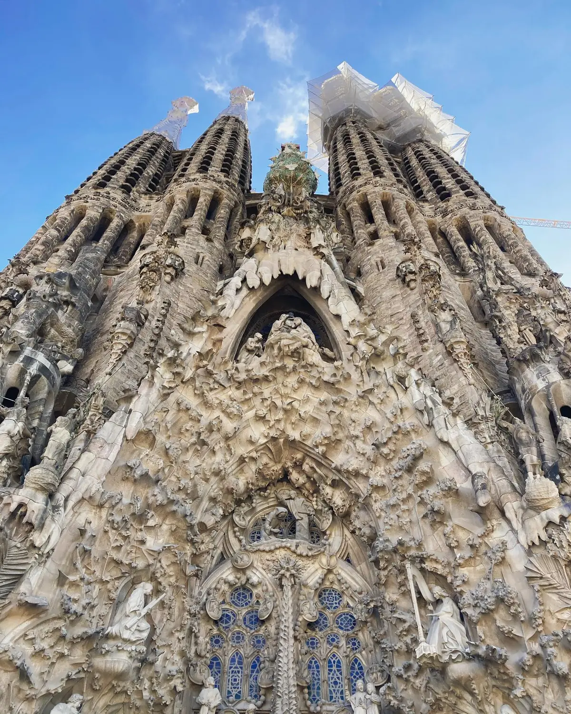

The icon01
The Sagrada Família
📍 Eixample · Gaudí's basilica
The one thing you cannot miss. Gaudí's still-unfinished basilica is unlike any building on earth — a forest of stone towers outside, an explosion of coloured light within. The pond in Plaça de Gaudí gives you the classic reflection shot. Book ahead and go early or near closing for softer light and smaller crowds; a guided ticket with tower access is worth it to understand what you're looking at.
Book aheadGo early
GetYourGuide
We'd recommend